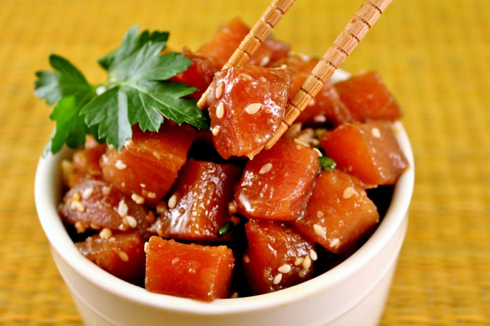

Poke Bowl Recipe

Description
This easy poke recipe is a refreshing Hawaiian salad of fresh ahi tuna steak cubes tossed with soy sauce, sesame oil, and green onions for a dish full of umami flavor. I like to add chopped macadamia nuts even though they are not authentic - they add a delicious crunch! This makes 4 main course servings or 8 appetizer servings.
Ingredients:
- 2 pounds fresh tuna steaks, cubed
- 1 cup soy sauce
- ¾ cup chopped green onions
- 2 tablespoons sesame oil
- 1 tablespoon toasted sesame seeds
- 1 tablespoon crushed red pepper (Optional)
- 2 tablespoons finely chopped macadamia nuts
Steps:
- In a medium non-reactive bowl, combine shi, soy sauce, green onions, sesame oil, sesame seeds, chili pepper, and macadamia nuts; mix well. Refrigerate at least 2 hours before serving.